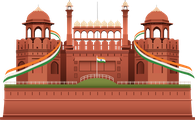
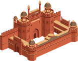
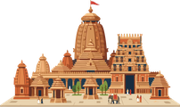
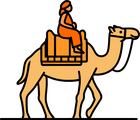
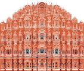
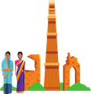
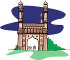

Browse every destination by season or by state — find the right trip for whenever you're travelling, wherever you want to go.
12 destinations found

Imperial Delhi, Krishna's temple towns, and the Taj Mahal in one heritage circuit.

The living spiritual capital on the banks of the Ganges.

Riverside yoga towns and sacred teachings in the Himalayan foothills.

Home to the Taj Mahal and Mughal grandeur along the Yamuna.

Ruined splendour of the Vijayanagara Empire among boulder-strewn hills.

High-altitude deserts, turquoise lakes, and Himalayan monasteries.

Cold-desert monasteries, high villages, and Chandratal Lake.

Colonial hill towns, Solang Valley, and Parvati Valley cafes in one trail.

The sacred circuit of Yamunotri, Gangotri, Kedarnath & Badrinath.

Rolling carpets of tea across the Western Ghats.

The Venice of the East — palm-fringed canals and houseboats.
Colonial Kochi, tea hills, wildlife forests, and a backwater houseboat night.

The classic Kerala circuit extended to a beach finish at Kovalam.

The complete trail — hills, backwaters, beaches, and the capital's temple heritage.

Buzzing beaches and forts up north, quiet coves and churches down south.

The classic Goa circuit extended inland to a jungle waterfall safari.
.jpg?width=500)
The complete Rajasthan circuit — palaces, forts, desert dunes, and lakeside towns.

The royal city of palaces, silk, and sandalwood.

Misty coffee country in the Western Ghats.

The Queen of Hill Stations — toy trains and tea gardens.

Madurai, Rameswaram, Kanyakumari, Srirangam & Thanjavur in one circuit.

Pastel French Quarter streets meet the Bay of Bengal.

The two most revered shrines of the Chardham, deep in the Garhwal Himalayas.

The world's highest Shiva temple and the summit trek above it.

Twin holy towns on the Ganges, where the river meets the plains.

A UNESCO World Heritage Site famous for vibrant alpine flowers and Himalayan beauty.

The summer capital of Kashmir — Dal Lake, Mughal gardens, and houseboats.

The Meadow of Flowers — cable cars, ski slopes, and pine forests.

The Valley of Shepherds — the Lidder River and Betaab Valley.

The Meadow of Gold — the Sindh River and Thajiwas Glacier.

One of India's most-visited pilgrimages, deep in the Trikuta Hills.

Coral atolls and turquoise lagoons across Agatti, Bangaram, Kavaratti & Minicoy.

Beach promenades and hilltop viewpoints, then coffee hills across the Eastern Ghats.

Bomdila, Dirang, Tawang, Bum La Pass & Madhuri Lake in the Buddhist Himalayas.
No destinations match this combination of filters — try a different season or state.